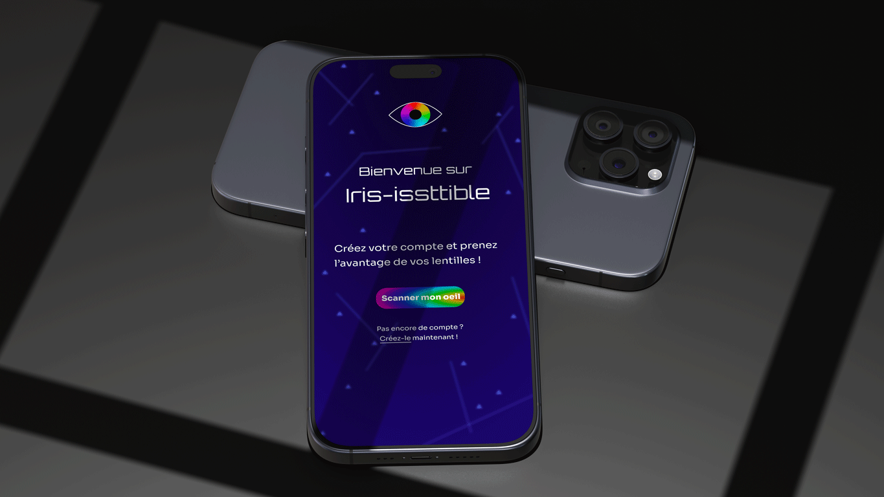
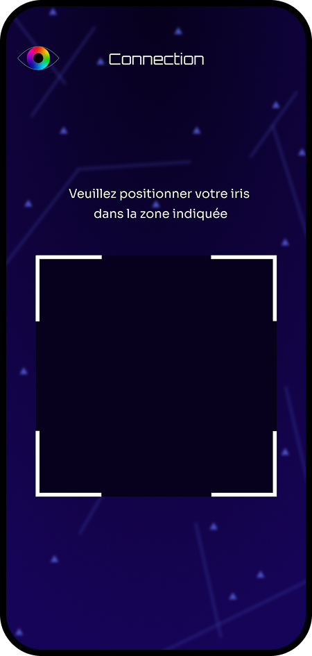
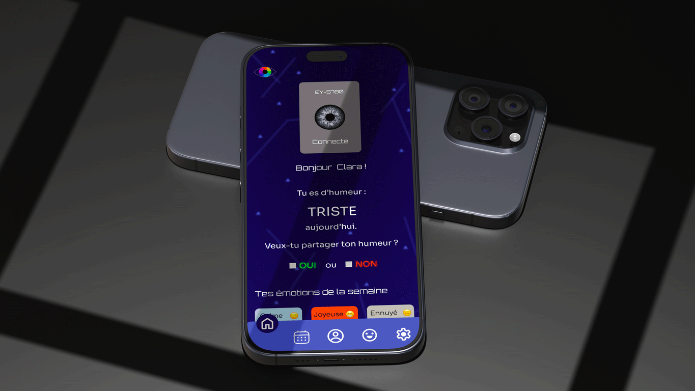
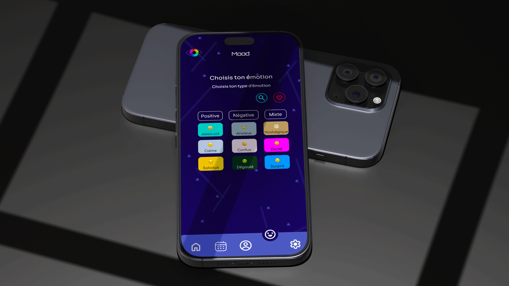
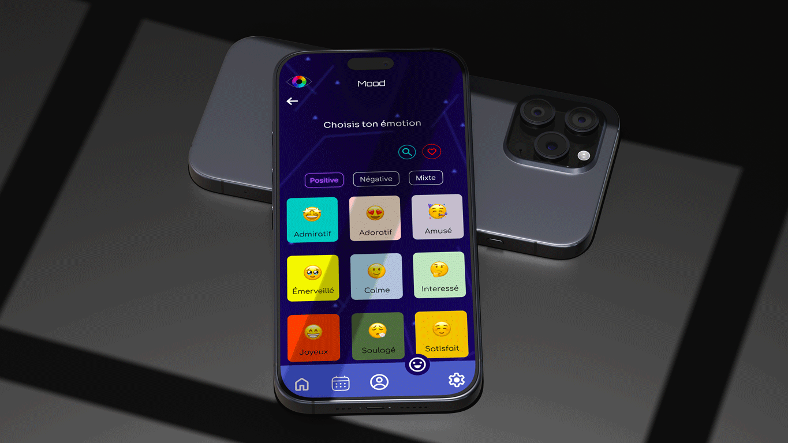
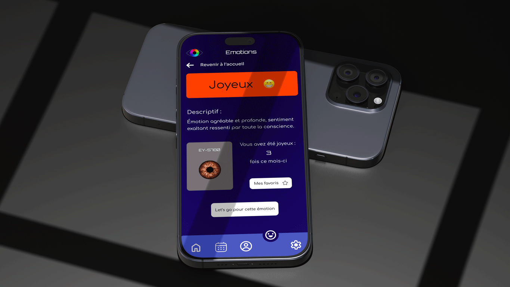
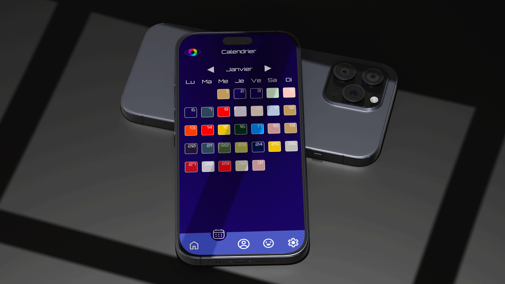
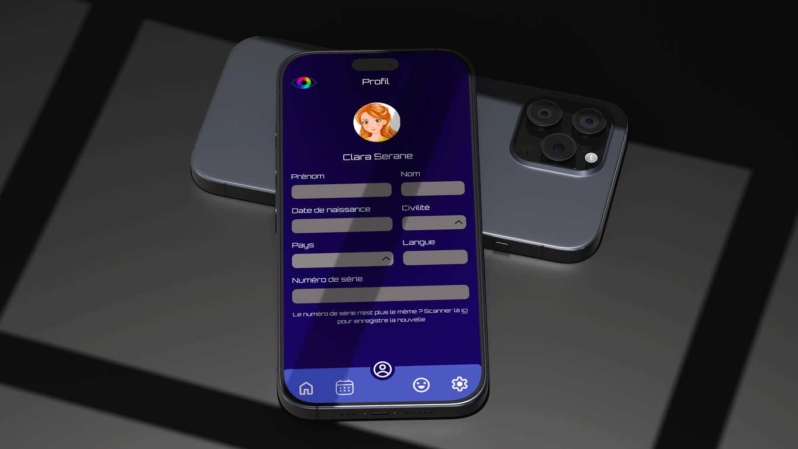

Fonctionnalités principales
Détection émotionnelle

L'émotion émise par l'utilisateur est détectée grâce à des capteurs biométriques internes
Mode personnalisable
Si l'émotion ne te plaît pas où qu'elle n'est pas la bienvenue, tu pourras également choisir par toi même l'émotion que tu veux transmettre au monde.
Historique émotionnel
Retrouver les émotions que vous avez ressenties durant les derniers mois. Vous pouvez également les réutiliser pour votre émotion du jour.
L'application
Connection
Voici la première page de cette application. Sur cette page, vous trouverez un premier bouton qui vous mènera à la page suivante, le scan.
Si vous n'avez pas encore de compte, c'est grâce à cette page que vous pourrez accéder à la création du compte via le lien en dessous du bouton.
Scan
Une fois votre compte créé, c'est grâce à cette page que vous pourrez vous connecter. En scannant votre lentille, l'application pourra vous reconnaitre. La lentille est unique, donc la reconnaissance se fait comme une empreinte digitale, grâce à des spécificités.
Accueil
Une fois identifié, vous serez redirigé vers la page d'accueil, la page centrale. Sur cette page, vous aurez d'abord un récapitulatif de votre lentille, le modèle ainsi que le numéro de série. Ensuite, vous aurez votre émotion du jour. Cette émotion, vous aurez le choix de la diffuser au monde ou non.
En plus de ça, vous avez un petit récapitulatif des émotions que vous avez ressenties durant la semaine. Vous trouverez aussi un menu vous redirigeant vers les différentes pages de l'appli
Choix de l'émotion
Si vous décidez de ne pas vouloir partager votre émotion aux autres, vous serez redirigé vers cette page. Ici, vous pourrez choisir le type d'émotion que vous voulez, plutôt positive, plutôt négative ou encore une émotion dite mixte. Vous pourrez également choisir l'émotion via le champ de recherche ou via vos émotions likées.
Émotions positives
Cette page-ci est l'une des 3 pages d'émotions que vous pouvez trouver. Ici, nous sommes sur la page émotions positives, mais elles ont toutes le même visuel. Vous trouverez une liste des émotions.
Chaque émotion a sa propre couleur, celle-ci permet de différencier les émotions et que les autres les identifient plus facilement. Une fois que vous avez choisi votre émotion, vous pourrez cliquer dessus afin d'accéder à la page suivante.
Émotion
Une fois votre émotion choisie, vous tomberez sur une page comme celle-ci, elle sera bien sûr adaptée à l'émotion choisie. Sur cette page, vous trouverez le nom de l'émotion, sa couleur, un descriptif, ainsi qu'une visualisation de votre lentille dans cette couleur.
Vous trouverez aussi une information sur le nombre de fois où cette émotion est apparue dans le mois. Il y a aussi 2 boutons. L'un pour ajouter l'émotion aux émotions favorites et l'autre pour choisir cette émotion.
Calendrier
En plus de ces pages obligatoires, vous trouverez des pages "bonus" comme celle-ci. Il s'agit d'un calendrier de l'année récapitulant les émotions que vous avez ressenties chaque jour. Vous pourrez cliquer sur le jour afin de voir l'émotion dont il s'agissait. Chaque couleur représente bien sûr la couleur de l'émotion.
Profil
Comme dans toutes les applications, vous trouverez une page profil avec toutes vos informations personnelles. Vous pourrez les modifier si votre situation venait à changer.
Paramètres

Enfin, vous trouverez une page paramètre. Celle-ci vous permettra de régler des détails de votre compte, vos notifications ou encore de supprimer votre compte. Vous pourrez également signaler un bug ou encore trouver les conditions d'utilisation.